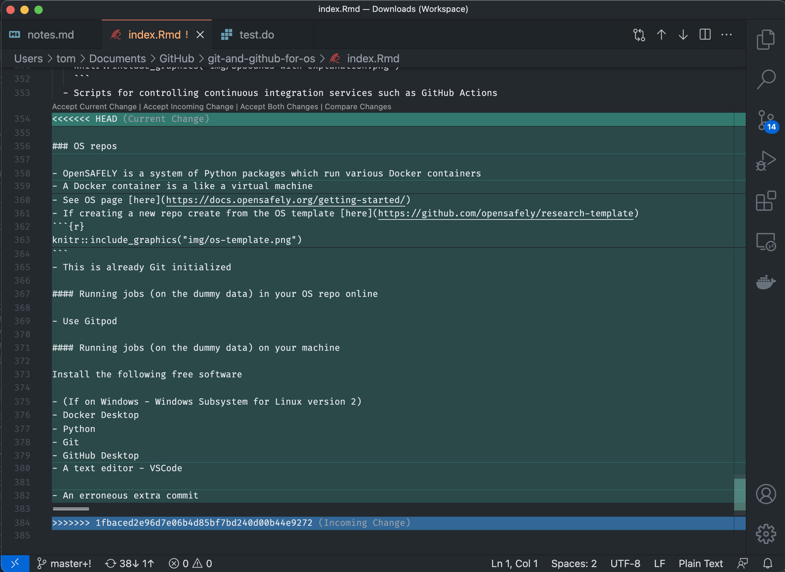
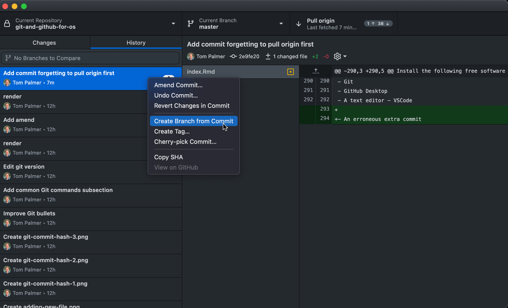
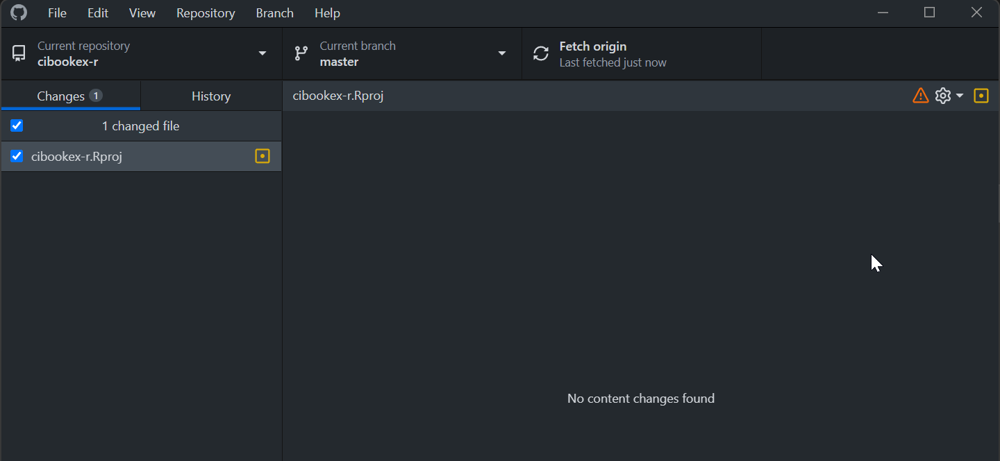

Common errors
Merge conflicts
- These can happen if e.g.,
- you forget to pull down the latest changes from GitHub (I find easy to forget in the morning)
- if you’re working on a project with multiple people
- you both create new branches
- they send in their PR first and it’s merged
- then you send in your PR which edits some of the same lines
- Let’s say I made changes yesterday which I pushed to GitHub
- The next day I restart work on a different computer, GitHub Desktop will show for example

- The next day I restart work on a different computer, GitHub Desktop will show for example
- But you forget to click “Pull origin”
- If you make commits onto a branch on which there are not yet pulled commits on GitHub you’ll get a merge error when you eventually click “Pull origin”

- You could resolve conflict e.g., in VSCode
 - We can see this can happen when we see both up and down arrows in Pull origin box (but not always)

- Fix
Move your changes to a new branch
Move back to
master/mainand revert/undo the changes there, then edit the files so they show no changes


Pull down the changes from GitHub to the relevant branch

Merge changes from your new branch into the
main/master/relevant branch
- See the GitHub documentation for more information about merge conflicts
No content changes found
If you see the following message from Git that a file has changed but there are No content changes found
This is most likely caused by working with colleagues using different operating systems, because they save text files with different line ending characters (
CRLFon Windows,LFon macOS/Linux/Unix)You can usually simply right click on the offending file in GitHub Desktop and Discard changes

Additionally you can set the following option at the top of your
.gitattributesfile# Auto detect text files and perform LF normalization * text=auto